| Date | Ver. | Inc. | Author | Amendment | |
|---|---|---|---|---|---|
| April 2010 | 0 | 1 | Kevin John | New Topic created to migrate content from Word Authoring Guide v2.0 | Draft |
| March 2011 | 0 | 2 | Kevin John | Previous content restructured into separated topics to enable links to work | Draft |
|
Entity |
Definition / Context |
Core Notations |
||||||||||||
|---|---|---|---|---|---|---|---|---|---|---|---|---|---|---|
|
Initial Elements:
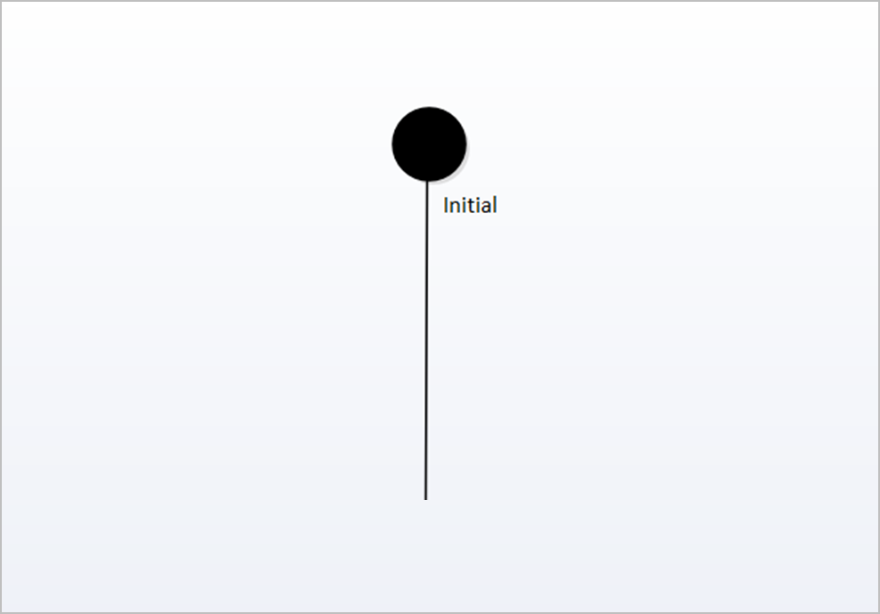
|
“Initial Elements represent a pseudo-state used to denote the default state of a Composite State.” |
Initial Elements are a small solid black circle element.
Labelled ‘Initial’, along with any other identifying name for this element.
There can be one Initial vertex in each Region of the Composite State.
|
||||||||||||
|
State Element:
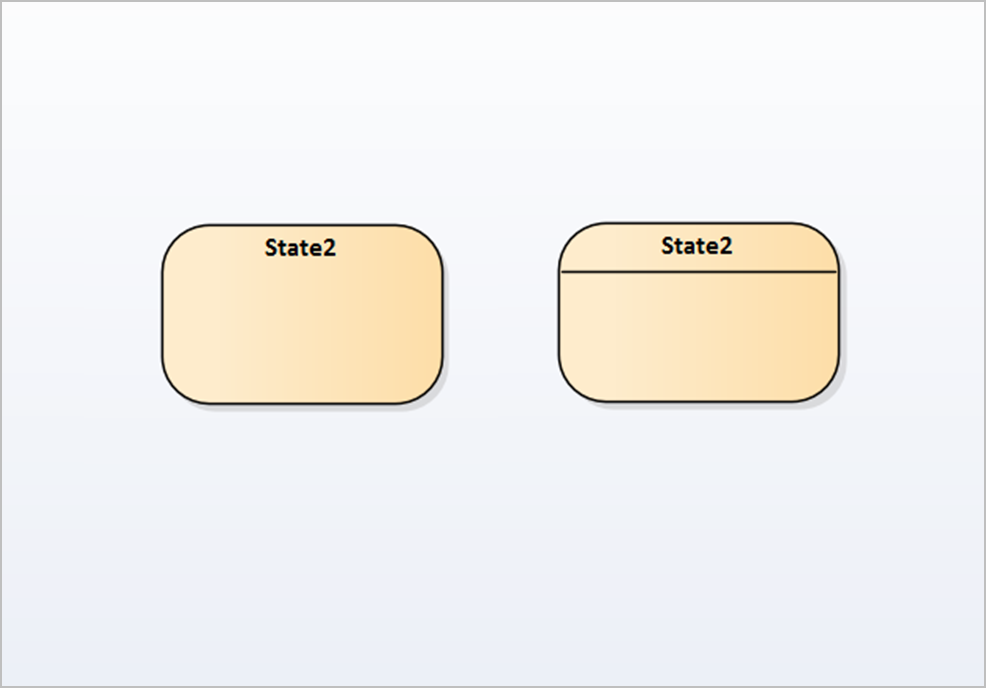
|
“A State represents a situation where some invariant condition holds; this condition can be static (waiting for an event)
or dynamic (performing a set of activities).”
There are three notations for State Elements: A Simple State, a Composite State, an Orthogonal State and a Submachine State.
|
State Elements are represented as round corner boxes with the name of the state showing inside.
State Elements can display either with or without a line across them.
A Simple State: has no internal vertices or Transitions.
A Composite State: contains exactly one Region.
An Orthogonal State: contains multiple Regions.
A Submachine State: refers to an entire StateMachine.
|
||||||||||||
|
State Machine Element:
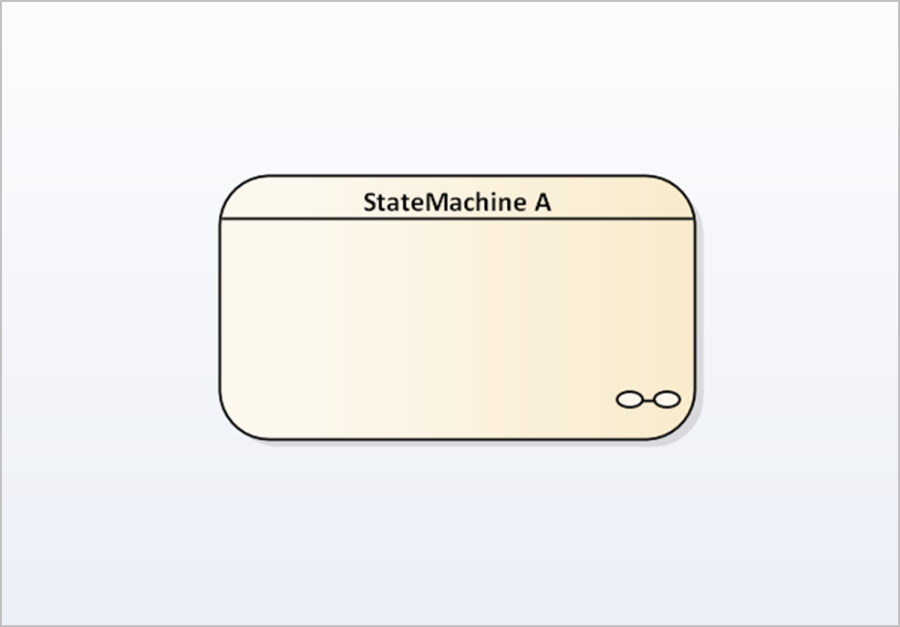
|
“A State Machine Element is a container for groups of related State Elements.” |
State Machine Elements are represented as a State Element with a "spectacle" symbol where the decomposition is hidden, or
it can be visible in the "parent" diagram.
State Machine Elements link to a ‘composite’ diagram to elaborate the states relating to the ‘parent’ state.
|
||||||||||||
|
Final State:
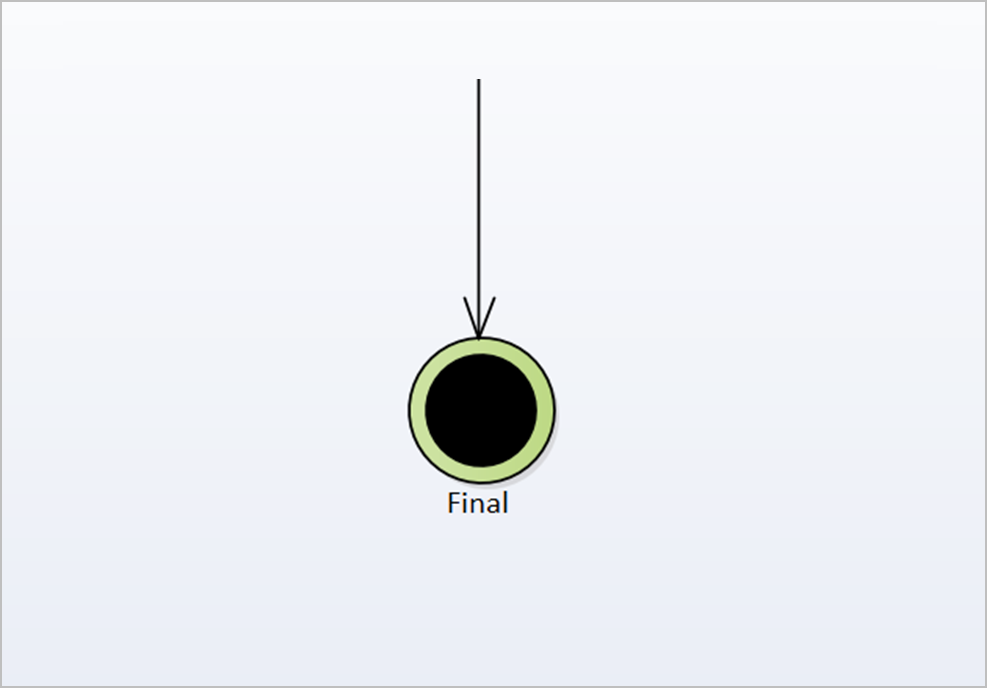
|
“A Final State is a special kind of state signifying that the enclosing region is completed. If the enclosing region is directly
contained in a State Machine and all other regions in the State Machine also are completed, then it means that the entire
State Machine is completed.” |
A Final State Element is represented as a small solid black circle enclosed within a circle outline.
A Final State is labelled "Final’ or any other identifying name to indicate its state.
|
||||||||||||
|
Terminate:
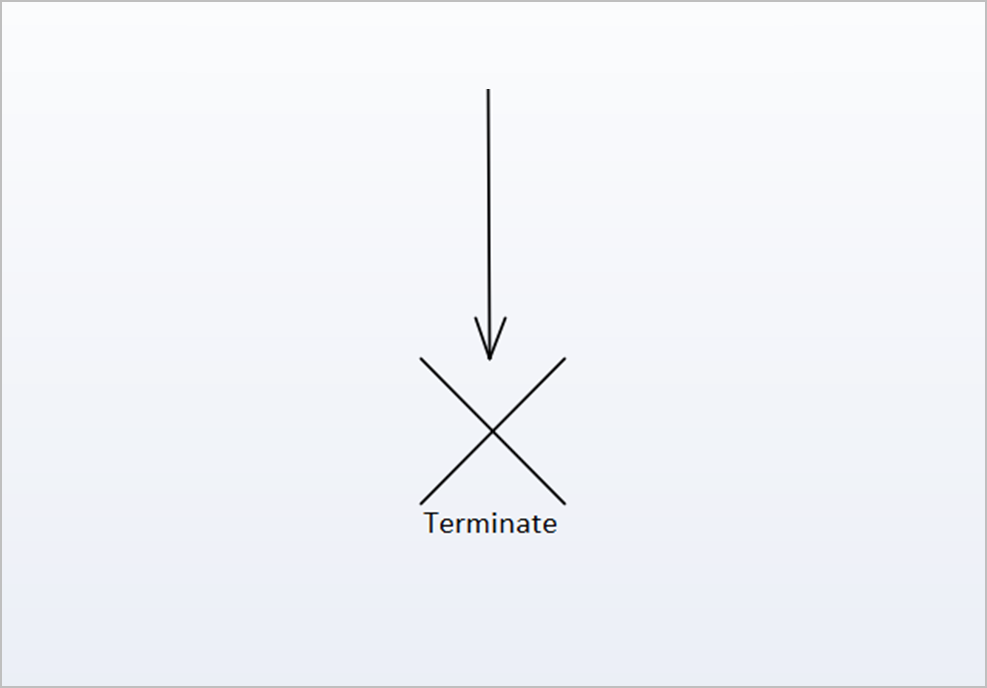
|
“A Terminate is a pseudo-state indicating that upon entry of its pseudo-state, the State Machine's execution ends.” |
A Terminate is represented as a diagonal cross labelled terminate.
It has a single incoming flow.
|
||||||||||||
|
Choice Element:
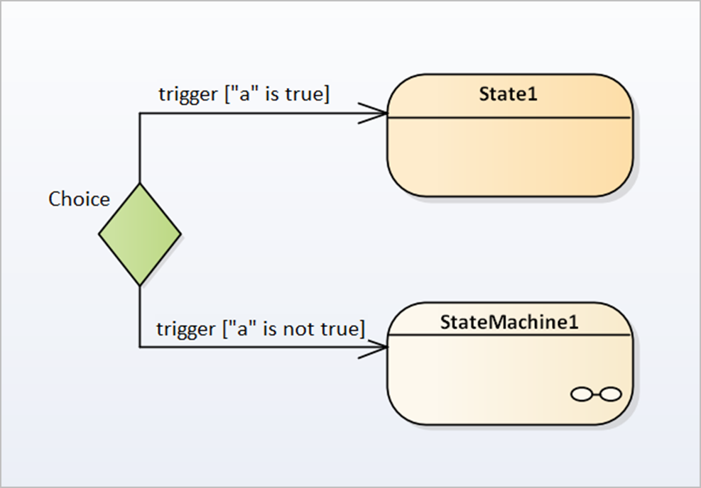
|
“The Choice Element is a pseudo-state used to compose complex transitional paths, where the outgoing transition path is decided
by dynamic, run-time conditions.”
It evaluates the Guard Conditions of the Triggers of its outgoing Transitions to select only one outgoing Transition. The
decision on which path to take may be a function of the results of prior actions performed in the same run-to-completion step.
|
A Choice Element is represented as a filled diamond shape.
It is labelled with the decision needed as a question or condition.
The Guard condition are displayed on the outgoing Flows from a Decision Element.
Example: [yes], [no] or other stated condition [do ...].
|
||||||||||||
|
Junction Element:
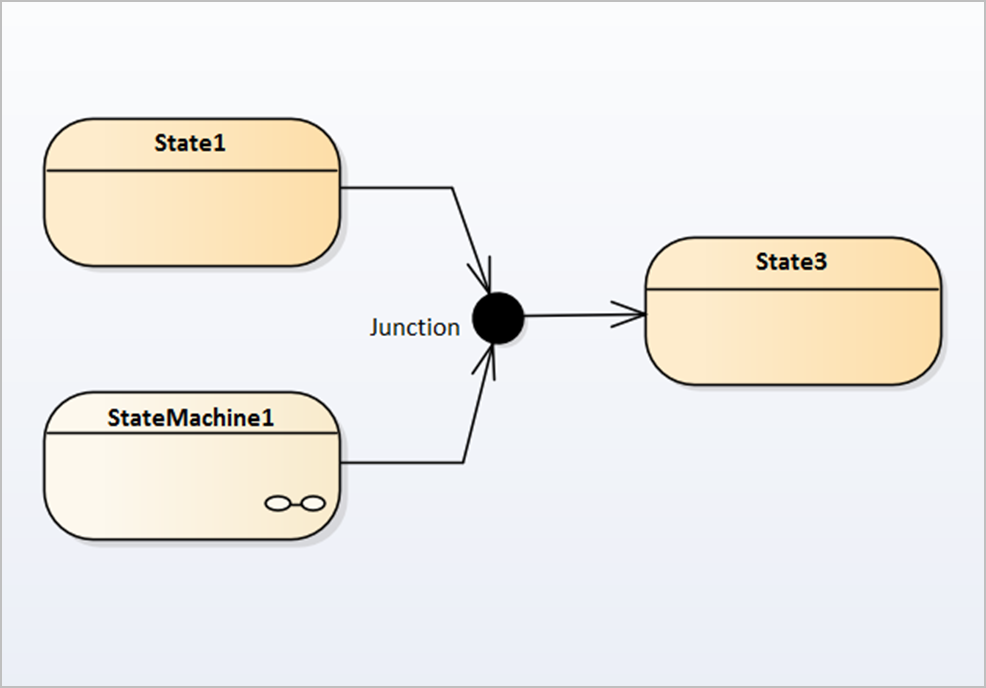
|
“A Junction Element is a pseudo-state used to combine or merge multiple paths into a shared transition path; it is used to
design complex transitional paths.”
A Junction can alternately split an incoming path into multiple paths, similar to a Fork pseudo-state. Unlike Forks or Joins,
Junctions can apply guards to each incoming or outgoing transition, such that if the guard expression is false, the transition is disabled.
|
The Junction Element is represented as a small solid black circle.
The element should be labelled "junction" .
Transitions from Junction Elements may also have Guard Conditions.
|
||||||||||||
|
Regions within State Elements:
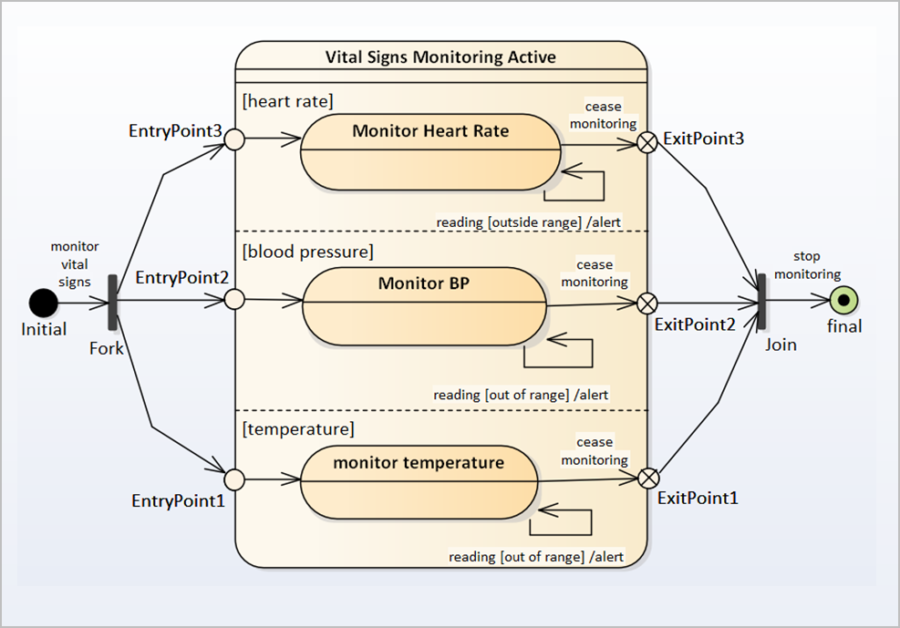
|
“Regions within State Elements are used to model concurrently active states for Composite State Elements, or State Machine
Elements.” |
Regions within State Elements are denoted by dotted line in the state element.
The region can also be named to identify its usage/
Each region of a Composite State may have an Initial pseudo-state and a Final state. Alternatively Entry and Exit points may
be used.
Only one State can be active in each region.
Multiple Transitions can occur from a single event dispatch, so long as the similarly-triggered Transitions are divided by
Regions.
A Transition to the enclosing State represents a Transition to the initial pseudo-state in each region.
A newly-created object takes its topmost default Transitions, originating from the topmost initial pseudo-states of each region.
|
||||||||||||
|
Fork Element:
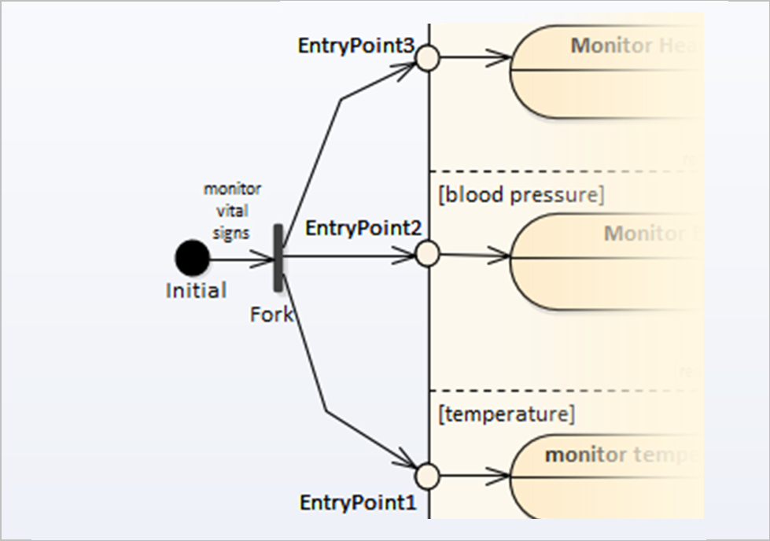
|
“Forks are pseudo-state elements that serve to split an incoming Transition into two or more outgoing Transitions.”
They can be used with orthogonal regions of a Composite State. |
A Fork is represented as a short heavy bar.
The bar may have one or more Transitions from the bar to other states, but only one incoming Transition.
A label defining the Transition may be shown near the bar.
The Transitions outgoing from a Fork vertex must not have Guard Conditions or Triggers.
|
||||||||||||
|
Join Element:
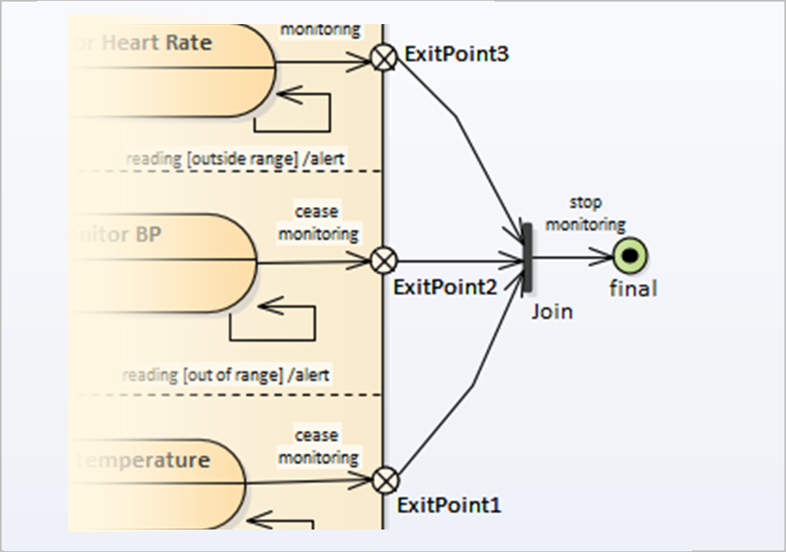
|
“Joins are pseudo-state elements that merges several Transitions into a single ongoing Transition.”
These can originate from vertices in different orthogonal regions of a Composite State. |
A Join is represented as a short heavy bar.
The bar may have one or more incoming Transitions from various states to the bar, but only one ongoing Transition.
A label defining the Transition may be shown near the bar.
The Transitions incoming to a Join vertex must not have Guard Conditions or Triggers.
|
||||||||||||
|
History Sub-States:
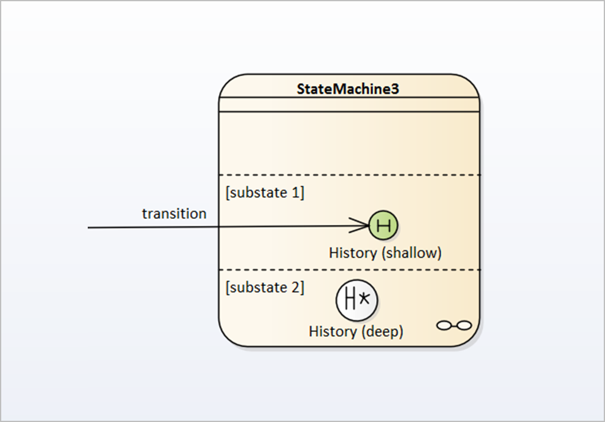
|
“A History sub-state is used to represent the most recently active sub-state of a state; there are two types of History pseudo-state:
‘Shallow’ and ‘Deep’ History sub-states.” |
At most one deep history and one shallow history can dwell within a composite state.
A History applies to the region of the state that directly encloses it.
Further notations are defined below for each type of History sub-state.
|
||||||||||||
|
Shallow History Sub-State:
(See figure at ‘History Sub-States’)
|
“A Shallow History sub-state is used to represent the most recently active sub-state of a Composite State; this pseudo-state
does not recurse into this sub-state's active configuration, should one exist.” |
A Shallow History sub-state is represented by a small circle containing: ‘H’ (a letter H).
A single connector can be used to depict the default shallow History state, in case the Composite State has never been entered.
|
||||||||||||
|
Deep History Sub-State:
(See figure at ‘History Sub-States’)
|
“A Deep History sub-state reflects the most recent active configuration of the Composite State. This includes active sub-states
of all regions, and recurses into those sub-states' active sub-states, should they exist.” |
A Deep History sub-state is represented by a small circle containing: ‘H*’ (a letter H with a star symbol).
.
|
||||||||||||
|
Transitions on State Machine Diagrams:
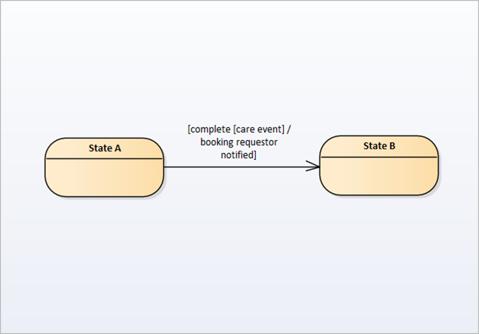
|
“Transitions are connectors between elements on UML State Machine Diagrams. They represent the logical movement from one state
to another state, according to the event that triggers a change of state.”
Transitions are defined using:
|
Transitions are represented by a solid directed line, with an arrow at the end of the Transition.
The Transition must always be labelled with a Trigger condition.
A Transition’s label may optionally include a Guard Condition as well as a Behaviour Expression.
The syntax of the labelling upon a Transition connector is:
[ trigger ] [ guard condition ] [ '/' behaviour-expression ].
|
||||||||||||
|
Self-Transition:
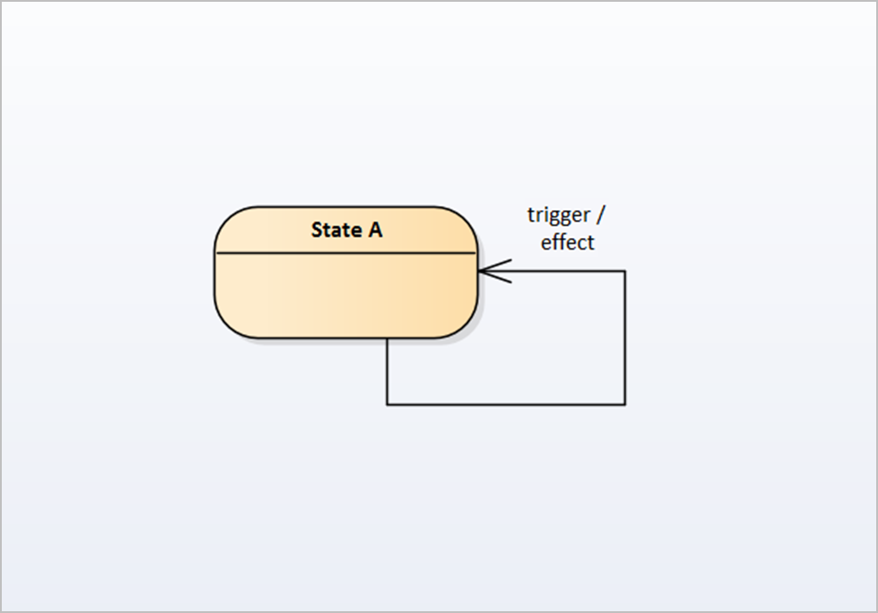
|
“A Self-Transition on a UML State Machine Diagram occurs where following a Transition being triggered and the resulting actions
taking place, and the routine is still left in the same state.”
The Triggering event and subsequent actions still take place but the State following this action remains the same. |
A Self-Transition is represented as a Transition that points back to the originating element.
The Transition is labelled with a Trigger condition.
|
| Related content:“ Figure: state machine diagram example” |